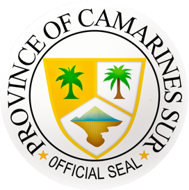
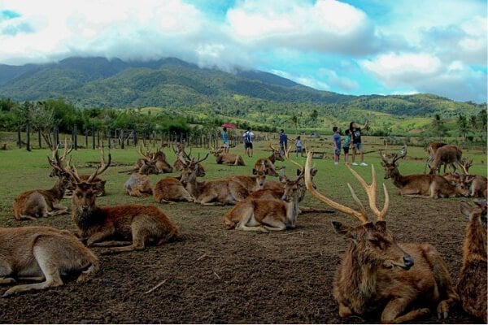
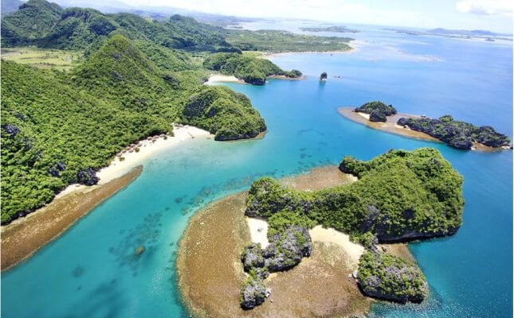
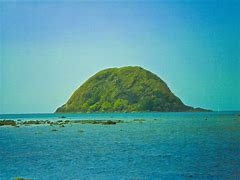
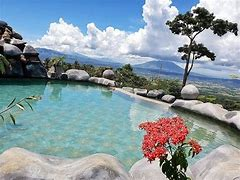
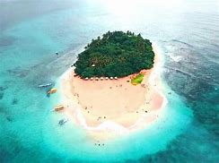
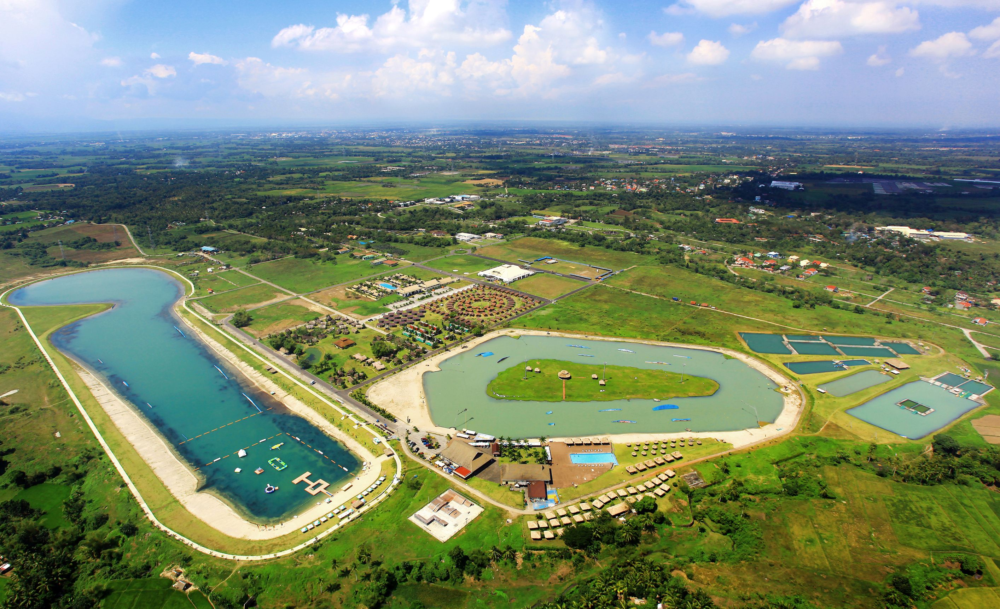

WELCOME TO THE PROVINCE OF CAMARINES SUR

HISTORY
The history of Camarines Sur is an amalgam of cross-sectoral developments and external influences. Folklore and scientific researches have it that, thousands of years ago, there was a wendering tribe of Tabon men inhabiting a vast area of verdant, fertile plains and rolling hills. The gentle, cave-dwelling Tabon families developed a common culture and called themselves Ibalon, while they called their land a bounty Tiera de Ibalon. The name used to refer to the entire island of Luzon, but later was adopted to refer to Kabikolan Region. The name Kabikolan was derived from the word biko, meaning bent, crooked, or twisted, denoting the plase along the Bicol River's meandering course.The first recorded account of Camarines Sur's discovery by the Spaniards was in 1569 when Captain Luis Enriquez de Guzman and Fr. Alfonso Gimenez first explored the province.
In 1571, the Spanish Conquistador Juan de Salcedo, grandson of Miguil Lopez de Legazpi, came to the Bicol Region from the North. Two years later, in 1573, Juan de Salcedo led his troops in penetrating and exploring the peninsula as far as Santiago de Libon in search for spices, gold, and other precious stone.
GEOGRAPHY
Camarines Sur covers a total area of 5,497.03 square kilometres (2,122 sq mi)[5] occupying the central section of the Bicol Region in Luzon. The province borders Camarines Norte and Quezon to the northwest, and Albay to the south. To the east lies the Maqueda Channel. Camarines Sur is home to five (5) out of eleven (11) declared natural parks in Bicol Region (Region V), namely Bicol Natural Park between the borders of Camarines Sur and Camarines Norte, Buhi Wildlife Sanctuary, Lagonoy Natural Biotic Area, Malabungot Protected Landscape in Caramoan, Camarines Sur, and Mount Isarog Natural Park, totaling 17,769.23 hectares.
Terrain
Camarines Sur occupies the central section of the Bicol Peninsula. With a land area of 5,266.8 square kilometres (2,034 sq mi), it is the largest province in the Bicol Region. At the center of the province is the Bicol Plain, surrounded by mountains which include Mount Bernacci (Tangcong Vaca), Mount Isarog and Mount Iriga. The eastern portion of the province lies on the mountainous Caramoan Peninsula, which faces the island of Catanduanes to the east.
The Bicol River drains the central and southern parts of the province into the San Miguel Bay. Mount Asog is surrounded by three lakes: Buhi, Bato, and Baao.
Climate
The climate in Camarines Sur, like most of the rest of the country, is very tropical. It is dry from March to May and wet the rest of the year Annual average rainfall is 2,565 millimetres (101 in). Camarines Sur has an average temperature of 27.0 °C (80.6 °F) and a relative humidity of 25.8%, based from Aera Tranquilo.
Administrative divisions
Camarines Sur comprises into 2 cities and 35 municipalities.
† Capital municipality
∗ Component city
Municipality
^ Independent component city (geographically within but outside of provincial jurisdiction)
DEMOGRAPHICS
Camarines Sur is a province located in the Bicol Region in Luzon of the Philippines. Its capital is Pili and the province borders Camarines Norte and Quezon to the northwest, and Albay to the south. To the east lies the island province of Catanduanes across the Maqueda Channel. Source: Wikipedia
Area of Camarines Sur 5,355.3 km²
Population 2.0 million
Male Population 1,047,624 (51.2%)
Female Population 999,682 (48.8%)
Population change from 1975 to 2015 +574.9%
Population change from 2000 to 2015 +51.4%
Median Age 20.5 years
Male Median Age 20.1 years
Female Median Age 21 years
Timezone Philippine Standard Time
ECONOMY
The economy of Camarines Sur, a province in the Bicol Region of the Philippines, plays a significant role in the region’s overall economic landscape. Let’s delve into some key aspects:
Agriculture: The economic activities in Camarines Sur are predominantly agriculture-based. The province’s entrepreneurs engage in trading with neighboring areas, contributing to rural income.
Trade: Trade is another vital sector in Camarines Sur’s economy. The exchange of goods and services within the province and with other regions fosters economic growth.
Tourism: Camarines Sur’s natural beauty, including pristine beaches, lush landscapes, and adventure destinations, attracts tourists. Tourism-related activities contribute to the local economy.
Industry: While agriculture remains a cornerstone, a diverse mix of industries has bolstered the province’s growth. These include tourism and manufacturing, transforming Camarines Sur into a bustling investment.
In terms of regional significance, the Philippine Statistics Authority (PSA) reports that in 2022, Camarines Sur accounted for 33.4 percent of the total economy of the Bicol Region. Following Camarines Sur, Albay and Masbate held shares of 24.9 percent and 13.7 percent, respectively. Meanwhile, Sorsogon, Camarines Norte, and Catanduanes contributed 12.8 percent, 10.3 percent, and 4.9 percent to the region’s economy2.
Camarines Sur’s economic vitality is a testament to its resilience and potential for further development. Whether through agriculture, trade, or tourism, the province continues to shape the economic landscape of Bicol Region. 🌴🌊🌺
TOURISM AND ATTRACTION






SCHOOLS AND UNIVERSITIES
Central Bicol State University of Agriculture
Ateneo de Naga University
University of Nueva Caceres Museum
Mathematics Department of Ateneo de Naga University
Central Bicol State University of Agriculture
Pili Capital College, Inc
Mariners Polytechnic Colleges FDN. Canaman